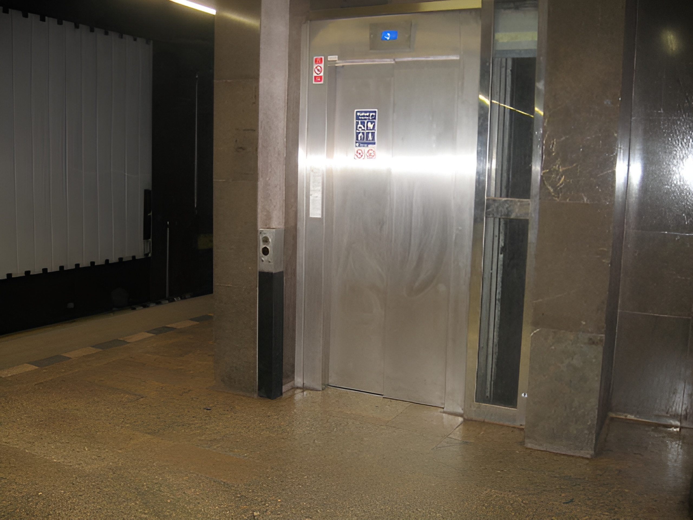

86.
But even if most people in industrial-technological society were well satisfied, we (FC) would still be opposed to that form of society, because (among other reasons) we consider it demeaning to fulfill one’s need for the power process through surrogate activities or through identification with an organization, rather than through pursuit of real goals.